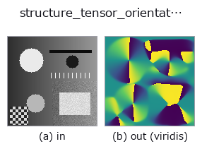

texture op• データ種: image → image
• 呼び出し: fullseye.apply(img, "structure_tensor_orientation", a=0.5, b=0.5) (2-D は 1 画像 + 2 スカラつまみ a,b∈[0,1] のモデル)

*図は合成の入力 128×128 で実際に走らせた出力。左が入力、右が出力。点群は上から見た散布(明るさ = z)、1-D 列は折れ線、体積は z 方向の最大値投影、動画は中央フレーム、複素画像は振幅、絵にならない返り値は値そのもの。*
*出力は viridis 風の疑似カラー(暗い紫 = 小、黄 = 大)。距離・位相・向き・深度のような「量の場」を読むため。*
つまみ a を振る(0.1 / 0.5 / 0.9、もう一方は既定):
▸ structure_tensor_orientation: knob a sweep (docs site)
つまみ b を振る(0.1 / 0.5 / 0.9、もう一方は既定):
▸ structure_tensor_orientation: knob b sweep (docs site)
別の画像でも(合成シーン / 写真 / 硬貨。上段が入力、下段がその出力。つまみは既定):
▸ structure_tensor_orientation: other inputs (docs site)
*4 列目はカラー (H,W,3) の入力。この op は色を跨がずに扱える(色チャネルを 3 本目の空間軸として畳み込まない)。*
局所の縞の走る向き(構造テンソルの主軸)を `[0,1]` に写して返す。
`0 と 1 がともに水平、0.5` が垂直にあたる(向きは 180 度で一周するので、
`0 と 1` は同じ向き —— この出力を差分すると境目で偽の段差が出ることに注意)。
`a が微分前の平滑 sigma(0.5〜3.0 画素)、b が積分窓 rho`(1.0〜8.0 画素)。
`rho` は「どれくらいの広さで向きが揃っているとみなすか」で、繊維や研磨目のピッチより
大きく取る。
適用条件: 向きが定義できるのは勾配が構造的に偏っている所だけ。テンソルの
異方度が跡に対して `1e-6` を下回る画素(平坦面・等方な雑音)は「向き未定義」として
`0.5 を返す —— ここで床を置かないと、一様な面で丸め屑が arctan2` に増幅されて
明るさを 0.01 変えただけで向きが一斉に反転する。向きの確からしさは
`structure_tensor_coherence` で別に測ること。
用途: 繊維強化材の繊維配向、圧延・研磨の条痕方向、木目、結晶粒の伸長方向。
HALCON に対応する単体 op は無い。
• gallery2d_texture_freq ファミリ ガイド
• サンプルデータ カタログ(DL URL / ライセンス) — 2-D は skimage.data(BSD/public)+ 合成、3-D は実データ源(Stanford/PDS 等)の DL URL。
• 演算子の来歴・参考文献 — この op 族の元になった研究/手法の出典。
• アルゴリズムの正典(著者・年)と用途は上記ファミリ使い方ガイドに記載。
下のプログラムは実際に走ることを確かめてある(図と同じ入力)。Studio のヘルプではこのブロックがボタンになり、その場で読み込んで実行できる。
structure_tensor_orientation 0.50 0.50
▸ Load this pipeline · Load & run
• gallery2d_texture_freq — py -3.11 examples/gallery2d_texture_freq.py
image を入力に取れる)identity · gaussian · mean_box · bilateral · unsharp · median · min_filter · max_filter
texture)std_filter · local_bimodality · local_std · scale_select_std · bootstrap_std_error · structure_tensor_coherence · gabor · sk_frangi
*Provenance: ops.py — 2D operator registry. この per-op ノートは tools/opdocs.py md が自動生成(手編集しない)。*
© 2026 Kazufumi Furuse — Fullseye operator documentation. Licensed under Apache-2.0.
{kind=link}
{kind=link}
{kind=link}